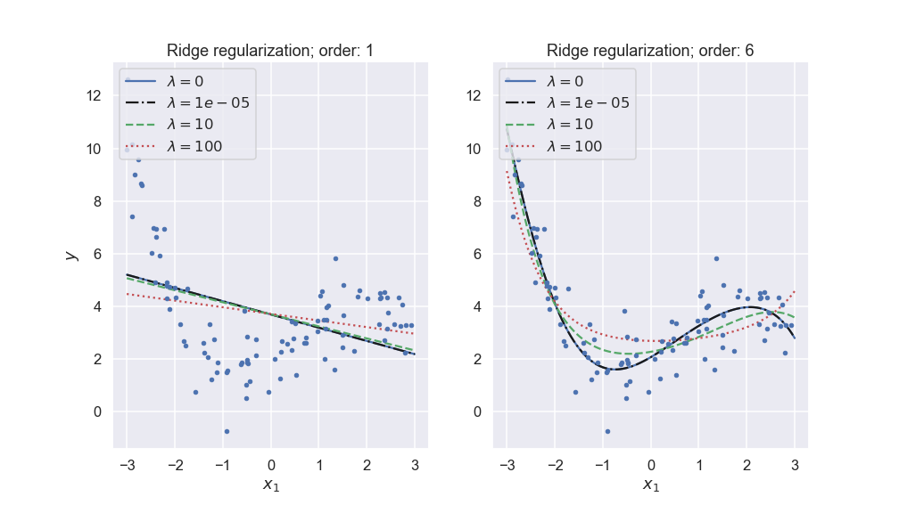

Learning from data: Model Validation and Regularization
Sep 9, 2019
In this lecture we will continue to explore linear regression and we will encounter several concepts that are common for machine learning methods. These concepts are:
- Overfitting and underfitting
- Bias-variance-tradeoff
- Regularization
- Model hyperparameters
- Model validation
- Gradient descent optimization
- Learning curves
The lecture is based and inspired by material in several good textbooks: in particular chapter 4 in Hands‑On Machine Learning with Scikit‑Learn and TensorFlow by Aurelien Geron and chapter 5 in the Python Data Science Handbook by Jake VanderPlas. The cross-validation example with Ridge Regularization is taken from teaching material developed by Morten Hjorth-Jensen at the Department of Physics, University of Oslo & Department of Physics and Astronomy and National Superconducting Cyclotron Laboratory, Michigan State University.
Model validation
Over- and underfitting
Overfitting and underfitting are common problems in data analysis and machine learning. Both extremes are illustrated in Fig. 1 from the demonstration notebook.
Figure 1: The first-order polynomial model is clearly underfitting the data, while the very high degree model is overfitting it trying to reproduce variations that are clearly noise.

The following quote from an unknown source provides a concise definition of overfitting and underfitting:
A model overfits if it fits noise rather than only the data and underfits if it considers variability in data to be noise while it is actually not.
The question is then: How do we detect these problems and how can we reduce them.
We can detect over- and underfitting by employing holdout sets, also known as validation sets (or sometimes referred to as validation sets). This means that we only use a fraction of the data for training the model, and save the rest for validation purposes. I.e. we optimize the modle parameters to best fit the training data, and then measure e.g. the mean-square error (MSE) of the model predictions for the validation set.
An underfit model has a high bias, which means that it gives a rather poor fit and the performance metric will be rather bad (large error). This will be true for both the training and the validation sets.
An overfit model typically has a very large varianc, i.e. the model predictions reveal larger variance than the data itself. We will discuss this in more detail further down. High variance models typically perform much better on the training set than on the validation set.
Alternatively, a telltale sign for overfitting is the appearance of very large fit parameters that are needed for the fine tunings of cancellations of different terms in the model. The fits from our example has the following root-mean-square parameters $$ \theta_\mathrm{rms} \equiv \frac{1}{p} \sqrt{ \sum_{i=0}^p \theta_i^2 } \equiv \| \theta \|_2^2 / p. $$
| order | \( \theta_\mathrm{rms} \) |
| 1 | 3.0e-01 |
| 3 | 1.2e+00 |
| 100 | 6.3e+12 |
Regularization: Ridge and Lasso
Assuming that overfitting is characterized by large fit parameters, we can attempt to avoid this scenario by regularizing the model parameters. We will introduce two kinds of regularization: Ridge and Lasso. In addition, so called elastic net regularization is also in use and basically corresponds to a linear combination of the Ridge and Lasso penalty functions.
Let us remind ourselves about the expression for the standard Mean Squared Error (MSE) which we used to define our cost function and the equations for the ordinary least squares (OLS) method. That is our optimization problem is $$ {\displaystyle \min_{\boldsymbol{\theta}\in {\mathbb{R}}^{p}}}\frac{1}{n}\left\{\left(\boldsymbol{y}-\boldsymbol{X}\boldsymbol{ \theta}\right)^T\left(\boldsymbol{y}-\boldsymbol{X}\boldsymbol{\theta}\right)\right\}. $$ or we can state it as $$ {\displaystyle \min_{\boldsymbol{\theta}\in {\mathbb{R}}^{p}}}\frac{1}{n}\sum_{i=0}^{n-1}\left(y_i-\tilde{y}_i\right)^2=\frac{1}{n}\vert\vert \boldsymbol{y}-\boldsymbol{X}\boldsymbol{\theta}\vert\vert_2^2, $$ where we have used the definition of a norm-2 vector, that is $$ \vert\vert \boldsymbol{x}\vert\vert_2 = \sqrt{\sum_i x_i^2}. $$
By minimizing the above equation with respect to the parameters \( \boldsymbol{\theta} \) we could then obtain an analytical expression for the parameters \( \boldsymbol{\theta} \). We can add a regularization parameter \( \lambda \) by defining a new cost function to be optimized, that is $$ C_{\lambda,2} \left( \boldsymbol{X}, \boldsymbol{\theta} \right) \equiv {\displaystyle \min_{\boldsymbol{\theta}\in {\mathbb{R}}^{p}}}\frac{1}{n}\vert\vert \boldsymbol{y}-\boldsymbol{X}\boldsymbol{\theta}\vert\vert_2^2+\lambda\vert\vert \boldsymbol{\theta}\vert\vert_2^2 $$
which leads to the Ridge regression minimization problem where we constrain \( \vert\vert \boldsymbol{\theta}\vert\vert_2^2 \).
Alternatively, Lasso regularization can be performed by defining $$ C_{\lambda,1} \left( \boldsymbol{X},\boldsymbol{\theta} \right) \equiv \frac{1}{n}\vert\vert \boldsymbol{y}-\boldsymbol{X}\boldsymbol{\theta}\vert\vert_2^2+\lambda\vert\vert \boldsymbol{\theta}\vert\vert_1. $$
The optimization equation is now $$ {\displaystyle \min_{\boldsymbol{\theta}\in {\mathbb{R}}^{p}}}\frac{1}{n}\vert\vert \boldsymbol{y}-\boldsymbol{X}\boldsymbol{\theta}\vert\vert_2^2+\lambda\vert\vert \boldsymbol{\theta}\vert\vert_1 \]. $$ Lasso stands for least absolute shrinkage and selection operator.
Here we have defined the norm-1 as $$ \vert\vert \boldsymbol{x}\vert\vert_1 = \sum_i \vert x_i\vert. $$
Figure 2: Ridge regularization with different penalty parameters \( \lambda \) for different polynomial models of our noisy data set.

More on Ridge Regression
Using the matrix-vector expression for Ridge regression, $$ C(\boldsymbol{X},\boldsymbol{\theta})=\frac{1}{n}\left\{(\boldsymbol{y}-\boldsymbol{X}\boldsymbol{\theta})^T(\boldsymbol{y}-\boldsymbol{X}\boldsymbol{\theta})\right\}+\lambda\boldsymbol{\theta}^T\boldsymbol{\theta}, $$
by taking the derivatives with respect to \( \boldsymbol{\theta} \) we obtain then a slightly modified matrix inversion problem which for finite values of \( \lambda \) does not suffer from singularity problems. We obtain $$ \boldsymbol{\theta}^{\mathrm{Ridge}} = \left(\boldsymbol{X}^T\boldsymbol{X}+\lambda\boldsymbol{I}\right)^{-1}\boldsymbol{X}^T\boldsymbol{y}, $$
with \( \boldsymbol{I} \) being a \( p\times p \) identity matrix with the constraint that $$ \sum_{i=0}^{p-1} \theta_i^2 \leq t, $$
with \( t \) a finite positive number.
We see that Ridge regression is nothing but the standard OLS with a modified diagonal term added to \( \boldsymbol{X}^T\boldsymbol{X} \). The consequences, in particular for our discussion of the bias-variance are rather interesting.
For more discussions of Ridge and Lasso regression, Wessel van Wieringen's article is highly recommended. Similarly, Mehta et al's article is also recommended.
The bias-variance tradeoff
We will discuss the bias-variance tradeoff in the context of continuous predictions such as regression. However, many of the intuitions and ideas discussed here also carry over to classification tasks. Consider a dataset \( \mathcal{L} \) consisting of the data \( \mathbf{X}_\mathcal{L}=\{(y_j, \boldsymbol{x}_j), j=0\ldots n-1\} \).
Let us assume that the true data is generated from a noisy model $$ \boldsymbol{y}=f(\boldsymbol{x}) + \boldsymbol{\epsilon} $$
where \( \epsilon \) is normally distributed with mean zero and standard deviation \( \sigma^2 \).
In our derivation of the ordinary least squares method we defined then an approximation to the function \( f \) in terms of the parameters \( \boldsymbol{\theta} \) and the design matrix \( \boldsymbol{X} \) which embody our model, that is \( \boldsymbol{\tilde{y}}=\boldsymbol{X}\boldsymbol{\theta} \).
Thereafter we found the parameters \( \boldsymbol{\theta} \) by optimizing the means squared error via the so-called cost function $$ C(\boldsymbol{X},\boldsymbol{\theta}) =\frac{1}{n}\sum_{i=0}^{n-1}(y_i-\tilde{y}_i)^2=\mathbb{E}\left[(\boldsymbol{y}-\boldsymbol{\tilde{y}})^2\right]. $$
We can rewrite this as $$ \mathbb{E}\left[(\boldsymbol{y}-\boldsymbol{\tilde{y}})^2\right]=\frac{1}{n}\sum_i(f_i-\mathbb{E}\left[\boldsymbol{\tilde{y}}\right])^2+\frac{1}{n}\sum_i(\tilde{y}_i-\mathbb{E}\left[\boldsymbol{\tilde{y}}\right])^2+\sigma^2. $$
The three terms represent the square of the bias of the learning method, which can be thought of as the error caused by the simplifying assumptions built into the method. The second term represents the variance of the chosen model and finally the last terms is variance of the error \( \boldsymbol{\epsilon} \).
To derive this equation, we need to recall that the variance of \( \boldsymbol{y} \) and \( \boldsymbol{\epsilon} \) are both equal to \( \sigma^2 \). The mean value of \( \boldsymbol{\epsilon} \) is by definition equal to zero. Furthermore, the function \( f \) is not a stochastics variable, idem for \( \boldsymbol{\tilde{y}} \). We use a more compact notation in terms of the expectation value $$ \mathbb{E}\left[(\boldsymbol{y}-\boldsymbol{\tilde{y}})^2\right]=\mathbb{E}\left[(\boldsymbol{f}+\boldsymbol{\epsilon}-\boldsymbol{\tilde{y}})^2\right], $$ and adding and subtracting \( \mathbb{E}\left[\boldsymbol{\tilde{y}}\right] \) we get $$ \mathbb{E}\left[(\boldsymbol{y}-\boldsymbol{\tilde{y}})^2\right]=\mathbb{E}\left[(\boldsymbol{f}+\boldsymbol{\epsilon}-\boldsymbol{\tilde{y}}+\mathbb{E}\left[\boldsymbol{\tilde{y}}\right]-\mathbb{E}\left[\boldsymbol{\tilde{y}}\right])^2\right], $$ which, using the abovementioned expectation values can be rewritten as $$ \mathbb{E}\left[(\boldsymbol{y}-\boldsymbol{\tilde{y}})^2\right]=\mathbb{E}\left[(\boldsymbol{y}-\mathbb{E}\left[\boldsymbol{\tilde{y}}\right])^2\right]+\mathrm{Var}\left[\boldsymbol{\tilde{y}}\right]+\sigma^2, $$ that is the rewriting in terms of the so-called bias, the variance of the model \( \boldsymbol{\tilde{y}} \) and the variance of \( \boldsymbol{\epsilon} \).
The tradeoff between bias and variance is illustrated in Fig. 3 from the demonstration notebook.
Figure 3: The bias-variance for different polynomial models of our noisy data set.

Summing up
The bias-variance tradeoff summarizes the fundamental tension in machine learning, particularly supervised learning, between the complexity of a model and the amount of training data needed to train it. Since data is often limited, in practice it is often useful to use a less-complex model with higher bias, that is a model whose asymptotic performance is worse than another model because it is easier to train and less sensitive to sampling noise arising from having a finite-sized training dataset (smaller variance).
The above equations tell us that in order to minimize the expected validation error, we need to select a statistical learning method that simultaneously achieves low variance and low bias. Note that variance is inherently a nonnegative quantity, and squared bias is also nonnegative. Hence, we see that the expected validation MSE can never lie below \( Var(\epsilon) \), the irreducible error.
What do we mean by the variance and bias of a statistical learning method? The variance refers to the amount by which our model would change if we estimated it using a different training data set. Since the training data are used to fit the statistical learning method, different training data sets will result in a different estimate. But ideally the estimate for our model should not vary too much between training sets. However, if a method has high variance then small changes in the training data can result in large changes in the model. In general, more flexible statistical methods have higher variance.
Model validation
Let us summarize the basic recipe for applying a supervise machine-learning model:
- Choose a class of models
- Choose model hyperparameters
- Fit the model to the training data
- Use the model for predictions
In order to make an informed choice for these hyperparameters we need to validate that our model and its hyperparameters provide a good fit to the data. This important step is typically known as model validation, and it most often involves splitting the data into two sets: the training set and the validation set.
The model is then trained on the first set of data, while it is validated (by computing your choice of performance score) on the validation set.
Question
Why is it important not to train and evaluate the model on the same data?
Cross-validation
Cross-validation is a strategy to find model hyperparameters that yield a model with good prediction
performance. A common practice is to hold back some subset of the data from the training of the model and then use this holdout set to check the model performance. The splitting of data can be performed using the the train_test_split utility in Scikit-Learn.
One of these two data sets, called the training set, plays the role of original data on which the model is built. The second of these data sets, called the validation set, plays the role of the novel data and is used to evaluate the prediction performance (often operationalized as the log-likelihood or the prediction error: MSE or R2 score) of the model built on the training data set. This procedure (model building and prediction evaluation on training and validation set, respectively) is done for a collection of possible choices for the hyperparameters. The parameter that yields the model with the best prediction performance is to be preferred.
The validation set approach is conceptually simple and is easy to implement. But it has two potential drawbacks:
- The validation estimate of the validation error rate can be highly variable, depending on precisely which observations are included in the training set and which observations are included in the validation set. There might be data points that are critical for training the model, and the performance metric will be very bad if those happen to be excluded from the training set.
- In the validation approach, only a subset of the observations, those that are included in the training set rather than in the validation set are used to fit the model. Since statistical methods tend to perform worse when trained on fewer observations, this suggests that the validation set error rate may tend to overestimate the validation error rate for the model fit on the entire data set.
\( k \)-fold cross validation cross-validation
When the repetitive splitting of the data set is done randomly, samples may accidently end up in a fast majority of the splits in either training or validation set. Such samples may have an unbalanced influence on either model building or prediction evaluation. To avoid this \( k \)-fold cross-validation is an approach to structure the data splitting. The samples are divided into \( k \) more or less equally sized, exhaustive and mutually exclusive subsets. In turn (at each split) one of these subsets plays the role of the validation set while the union of the remaining subsets constitutes the training set. Such a splitting warrants a balanced representation of each sample in both training and validation set over the splits. Still the division into the \( k \) subsets involves a degree of randomness. This may be fully excluded when choosing \( k=n \). This particular case is referred to as leave-one-out cross-validation (LOOCV).
How to set up cross-validation
- Define a range of interest for the model hyperparameter(s) \( \lambda \).
- Divide the data set \( \mathcal{D} = \{1, \ldots, n\} \) into \( k \) exhaustive and mutually exclusive subsets \( \mathcal{D}_{i} \subset \mathcal{D} \) for \( i=1,\ldots,k \), and \( \mathcal{D}_{i} \cap \mathcal{D}_{j} = \emptyset \) for \( i \neq j \).
- For \( i \in \{1, \ldots, k\} \):
- Define \( \mathcal{D}_{i} \) as the validation set and \( \mathcal{D}_{-i} = \mathcal{D} - \mathcal{D}_i \) as the training set.
- Fit the model for each choice of the hyperparameter using the training set, which will give a best fit \( \boldsymbol{\theta}_{-i}(\lambda) \).
- Evaluate the prediction performance of these models on the validation set by the MAE, MSE, or the R2 score function.
- Average the prediction performances of the validation sets at each grid point of the hyperparameter by computing the cross-validated error. It is an estimate of the prediction performance of the model corresponding to this value of the penalty parameter on novel data. For example, using the MSE measure it is defined as
- The value of the hyperparameter that minimizes the cross-validated error is the value of choice.
Gradient-descent optimization
With the linear regression model we could find the best fit parameters using the normal equation. Although we could encounter problems associated with inverting a matrix, we do in principle have a closed-form expression for the model parameters.
In general, the problem of optimizing the model parameters is a very difficult one. We will return to the optimization problem later in this course, but will just briefly introduce the most common class of optimization algorithms: Gradient dDscent methods. The general idea of Gradient Descent is to tweak parameters iteratively in order to minimize a cost function.
Let us start with a cost function for our model such as the chi-squared function that was introduced in the Linear Regression lecture: $$ \chi^2(\boldsymbol{\theta})=\frac{1}{n}\sum_{i=0}^{n-1}\frac{\left(y_i-\tilde{y}_i\right)^2}{\sigma_i^2}=\frac{1}{n}\left\{\left(\boldsymbol{y}-\boldsymbol{\tilde{y}}\right)^T \boldsymbol{\Sigma}^{-1}\left(\boldsymbol{y}-\boldsymbol{\tilde{y}}\right)\right\}, $$
Instead of finding a matrix equation for the vector \( \boldsymbol{\theta} \) that minimizes this measure we will describe an iterative procedure:
- Make a random initialization of the parameter vector \( \boldsymbol{\theta}_0 \).
- Compute the gradient of the cost function with respect to the parameters (note that this can be done analytically for the linear regression model). Let us denote this gradient vector \( \boldsymbol{\nabla} \chi^2 \).
- Once you have the gradient vector, which points uphill, just go in the opposite direction to go downhill. This means subtracting \( \eta \boldsymbol{\nabla} \chi^2 \) from \( \boldsymbol{\theta}_0 \). Note that the magnitude of the step, \( \eta \) is known as the learning rate.
- Continue this process iteratively until the gradient vector is close to zero.
- It requires the computation of partial derivatives of the cost function. This is straight-forward for the linear regression method, but can be difficult for other models. The use of automatic differentiation is very popular in the ML community,and is well worth exploring.
- In principle, gradient descent works well for convex cost functions, i.e. where the gradient will eventually direct you to the position of the global minimum. Again, the linear regression problem is favorable because you can show that the cost function has that property. However, most cost functions—in particular in many dimensions—correspond to very complicated surfaces with many local minima. In those cases, gradient descent is often not a good method.
Learning curves
The performance of your model will depend on the amount of data that is used for training. When using iterative optimization approaches, such as gradient descent, it will also depend on the number of training iterations. In order to monitor this dependence one usually plots learning curves.
Learning curves are plots of the model's performance on both the training and the validation sets, measured by some performance metric such as the mean squared error. This measure is plotted as a function of the size of the training set, or alternatively as a function of the training iterations.
Figure 4: Learning curves for different polynomial models of our noisy data set as a function of the size of the training data set.

Several features in the left-hand panel deserves to be mentioned:
- The performance on the training set starts at zero when only 1-2 data are in the training set.
- The error on the training set then increases steadily as more data is added.
- It finally reaches a plateau.
- The validation error is initially very high, but reaches a plateau that is very close to the training error.
- The training error is much smaller than with the linear model.
- There is no clear plateau.
- There is a gap between the curves, which implies that the model performs significantly better on the training data than on the validation set.
- A high bias model has a relatively large error, most probably due to wrong assumptions about the data features.
- A high variance model is excessively sensitive to small variations in the training data.
- The irreducible error is due to the noisiness of the data itself. It can only be reduced by obtaining better data.